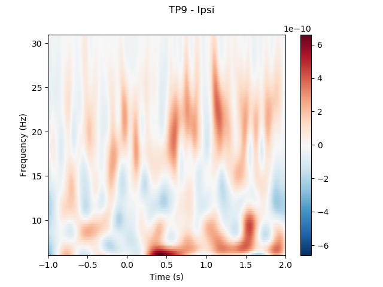
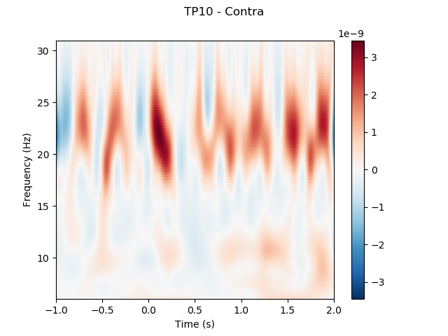
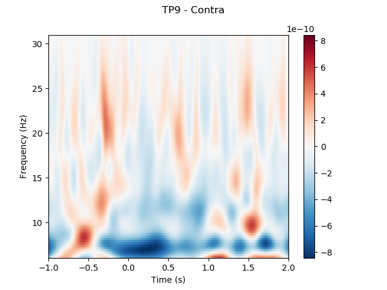
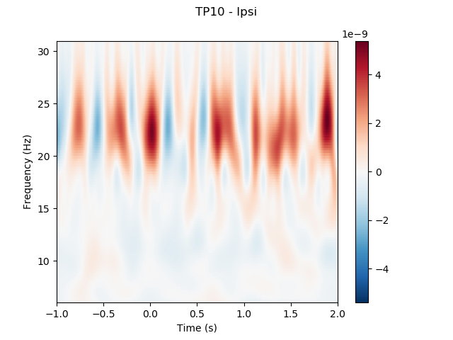
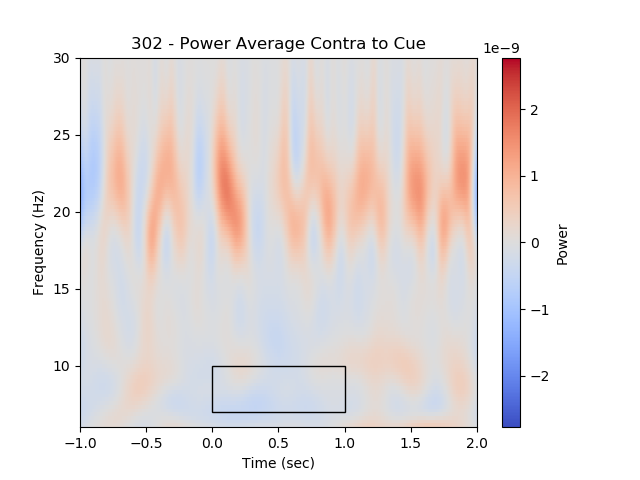
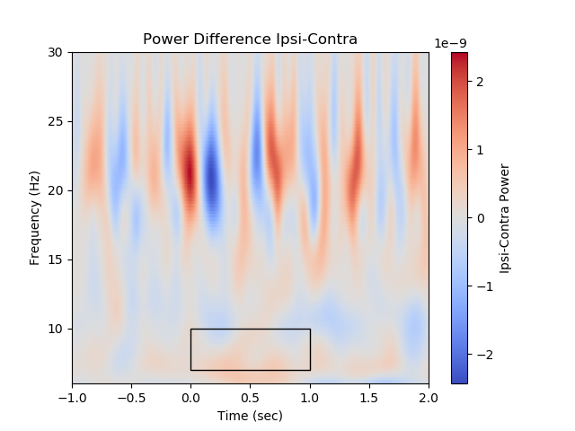

Note
Click here to download the full example code
Cueing Single Subject Analysis¶
The cueing task can ellicit a number of reliable changes. A central cue indicates the location of an upcoming target onset. Here the task can be changed to be perfectly predictive, or have some level of cue validity. Task is to indicate the orientation of a spatial grating on the target, up for vertical, right for horizontal.
ERP - Validly cued targets ellict larger ERP’s than invalidly cued targets
Response ERPs - Validly cued targets are more quickly identified and better identified
Oscillations - Alpha power lateralizes after a spatial cue onset preceeding the upcoming onset of a target. Alpha power becomes smaller contraleral to the target side, and larger ipsilateral with the target.
# Imports
from mne import Epochs, find_events, concatenate_raws
from mne.time_frequency import tfr_morlet
import numpy as np
import os
#from utils import utils
from collections import OrderedDict
import warnings
warnings.filterwarnings('ignore')
from matplotlib import pyplot as plt
import matplotlib.patches as patches
from eegnb.datasets import datasets
from eegnb.analysis import utils
Download the data¶
eegnb_data_path = os.path.join(os.path.expanduser('~/'),'.eegnb', 'data')
cueing_data_path = os.path.join(eegnb_data_path, 'visual-cueing', 'kylemathlab_dev')
# If dataset hasn't been downloaded yet, download it
if not os.path.isdir(cueing_data_path):
datasets.fetch_dataset(data_dir=eegnb_data_path, experiment='visual-cueing', site='kylemathlab_dev')
Prepare the Data for Analysis¶
# Once a suitable data set has been collected, it is now time to analyze the data and see if we can identify the cueing effects
# Load data into MNE objects MNE is a very powerful Python library for analyzing EEG data. It provides helpful functions for performing key tasks such as filtering EEG data, rejecting artifacts, and grouping EEG data into chunks (epochs).
# The first step after loading dependencies is use MNE to read the data we've collected into an MNE Raw object
sub = 302
raw = utils.load_data(cueing_data_path, sfreq=256.,
subject_nb=sub, session_nb=1,
)
raw.append(
utils.load_data(cueing_data_path, sfreq=256.,
subject_nb=sub, session_nb=2,
)
)
# Plot raw data
raw.plot();
Out:
Creating RawArray with float64 data, n_channels=5, n_times=61296
Range : 0 ... 61295 = 0.000 ... 239.434 secs
Ready.
Creating RawArray with float64 data, n_channels=5, n_times=61296
Range : 0 ... 61295 = 0.000 ... 239.434 secs
Ready.
Creating RawArray with float64 data, n_channels=5, n_times=61296
Range : 0 ... 61295 = 0.000 ... 239.434 secs
Ready.
<Figure size 640x480 with 4 Axes>
Power Spectral Density¶
# One way to analyze the SSVEP is to plot the power spectral density, or PSD. SSVEPs should appear as peaks in power for certain frequencies. We expect clear peaks in the spectral domain at the stimulation frequencies of 30 and 20 Hz.
raw.plot_psd();
# Should see the electrical noise at 60 Hz, and maybe a peak at the red and blue channels between 7-14 Hz (Alpha)
Out:
Effective window size : 8.000 (s)
<Figure size 640x480 with 2 Axes>
Filtering¶
# Most ERP components are composed of lower frequency fluctuations in the EEG signal. Thus, we can filter out all frequencies between 1 and 30 hz in order to increase our ability to detect them.
raw.filter(1,30, method='iir')
raw.plot_psd(fmin=1, fmax=30);
Out:
Filtering raw data in 3 contiguous segments
Setting up band-pass filter from 1 - 30 Hz
Using filter length: 61296
IIR filter parameters
---------------------
Butterworth bandpass zero-phase (two-pass forward and reverse) non-causal filter:
- Filter order 16 (effective, after forward-backward)
- Cutoffs at 1.00, 30.00 Hz: -6.02, -6.02 dB
Effective window size : 8.000 (s)
<Figure size 640x480 with 2 Axes>
Epoching¶
# Next, we will chunk (epoch) the data into segments representing the data 1000ms before to 2000ms after each cue, we will reject every epoch where the amplitude of the signal exceeded 100 uV, which should most eye blinks.
events = find_events(raw)
event_id = {'LeftCue': 1, 'RightCue': 2}
rej_thresh_uV = 150
rej_thresh = rej_thresh_uV*1e-6
epochs = Epochs(raw, events=events, event_id=event_id,
tmin=-1, tmax=2, baseline=(-1, 0),
reject={'eeg':rej_thresh}, preload=True,
verbose=False, picks=[0, 1, 2, 3])
print('sample drop %: ', (1 - len(epochs.events)/len(events)) * 100)
conditions = OrderedDict()
conditions['LeftCue'] = [1]
conditions['RightCue'] = [2]
fig, ax = utils.plot_conditions(epochs, conditions=conditions,
ci=97.5, n_boot=1000, title='',
diff_waveform=(1, 2), ylim=(-20,20))
Out:
213 events found
Event IDs: [ 1 2 11 12 21 22]
sample drop %: 95.77464788732395
Spectrogram¶
# We can also look for SSVEPs in the spectrogram, which uses color to represent the power of frequencies in the EEG signal over time
frequencies = np.linspace(6, 30, 100, endpoint=True)
wave_cycles = 6
# Compute morlet wavelet
# Left Cue
tfr, itc = tfr_morlet(epochs['LeftCue'], freqs=frequencies,
n_cycles=wave_cycles, return_itc=True)
tfr = tfr.apply_baseline([-1,-.5],mode='mean')
tfr.plot(picks=[0], mode='logratio',
title='TP9 - Ipsi');
tfr.plot(picks=[1], mode='logratio',
title='TP10 - Contra');
power_Ipsi_TP9 = tfr.data[0,:,:]
power_Contra_TP10 = tfr.data[1,:,:]
# Right Cue
tfr, itc = tfr_morlet(epochs['RightCue'], freqs=frequencies,
n_cycles=wave_cycles, return_itc=True)
tfr = tfr.apply_baseline([-1,-.5],mode='mean')
tfr.plot(picks=[0], mode='logratio',
title='TP9 - Contra');
tfr.plot(picks=[1], mode='logratio',
title='TP10 - Ipsi');
power_Contra_TP9 = tfr.data[0,:,:]
power_Ipsi_TP10 = tfr.data[1,:,:]
- 
- 
- 
- 
Out:
Applying baseline correction (mode: mean)
No baseline correction applied
No baseline correction applied
Applying baseline correction (mode: mean)
No baseline correction applied
No baseline correction applied
Now we compute and plot the differences¶
# time frequency window for analysis
f_low = 7 # Hz
f_high = 10
f_diff = f_high-f_low
t_low = 0 # s
t_high = 1
t_diff = t_high-t_low
# Plot Differences
# %matplotlib inline
times = epochs.times
power_Avg_Ipsi = (power_Ipsi_TP9+power_Ipsi_TP10)/2;
power_Avg_Contra = (power_Contra_TP9+power_Contra_TP10)/2;
power_Avg_Diff = power_Avg_Ipsi-power_Avg_Contra;
#find max to make color range
plot_max = np.max([np.max(np.abs(power_Avg_Ipsi)), np.max(np.abs(power_Avg_Contra))])
plot_diff_max = np.max(np.abs(power_Avg_Diff))
#Ipsi
fig, ax = plt.subplots(1)
im = plt.imshow(power_Avg_Ipsi,
extent=[times[0], times[-1], frequencies[0], frequencies[-1]],
aspect='auto', origin='lower', cmap='coolwarm', vmin=-plot_max, vmax=plot_max)
plt.xlabel('Time (sec)')
plt.ylabel('Frequency (Hz)')
plt.title('Power Average Ipsilateral to Cue')
cb = fig.colorbar(im)
cb.set_label('Power')
# Create a Rectangle patch
rect = patches.Rectangle((t_low,f_low),t_diff,f_diff,linewidth=1,edgecolor='k',facecolor='none')
# Add the patch to the Axes
ax.add_patch(rect)
#TP10
fig, ax = plt.subplots(1)
im = plt.imshow(power_Avg_Contra,
extent=[times[0], times[-1], frequencies[0], frequencies[-1]],
aspect='auto', origin='lower', cmap='coolwarm', vmin=-plot_max, vmax=plot_max)
plt.xlabel('Time (sec)')
plt.ylabel('Frequency (Hz)')
plt.title(str(sub) + ' - Power Average Contra to Cue')
cb = fig.colorbar(im)
cb.set_label('Power')
# Create a Rectangle patch
rect = patches.Rectangle((t_low,f_low),t_diff,f_diff,linewidth=1,edgecolor='k',facecolor='none')
# Add the patch to the Axes
ax.add_patch(rect)
#difference between conditions
fig, ax = plt.subplots(1)
im = plt.imshow(power_Avg_Diff,
extent=[times[0], times[-1], frequencies[0], frequencies[-1]],
aspect='auto', origin='lower', cmap='coolwarm', vmin=-plot_diff_max, vmax=plot_diff_max)
plt.xlabel('Time (sec)')
plt.ylabel('Frequency (Hz)')
plt.title('Power Difference Ipsi-Contra')
cb = fig.colorbar(im)
cb.set_label('Ipsi-Contra Power')
# Create a Rectangle patch
rect = patches.Rectangle((t_low,f_low),t_diff,f_diff,linewidth=1,edgecolor='k',facecolor='none')
# Add the patch to the Axes
ax.add_patch(rect)
# We expect greater alpha power ipsilateral to the cue direction (positive values) from 0 to 1.5 seconds

- 
- 
Out:
<matplotlib.patches.Rectangle object at 0x7f179b643c10>
Target Epoching¶
# Next, we will chunk (epoch) the data into segments representing the data .200ms before to 1000ms after each target, we will reject every epoch where the amplitude of the signal exceeded ? uV, which should most eye blinks.
events = find_events(raw)
event_id = {'InvalidTarget_Left': 11, 'InvalidTarget_Right': 12,
'ValidTarget_Left': 21,'ValidTarget_Right': 11}
epochs = Epochs(raw, events=events, event_id=event_id,
tmin=-.2, tmax=1, baseline=(-.2, 0),
reject={'eeg':.0001}, preload=True,
verbose=False, picks=[0, 1, 2, 3])
print('sample drop %: ', (1 - len(epochs.events)/len(events)) * 100)
#%matplotlib inline
conditions = OrderedDict()
conditions['ValidTarget'] = [21,22]
conditions['InvalidTarget'] = [11,12]
fig, ax = utils.plot_conditions(epochs, conditions=conditions,
ci=97.5, n_boot=1000, title='',
diff_waveform=(1, 2), ylim=(-20,20))
Out:
213 events found
Event IDs: [ 1 2 11 12 21 22]
sample drop %: 90.61032863849765